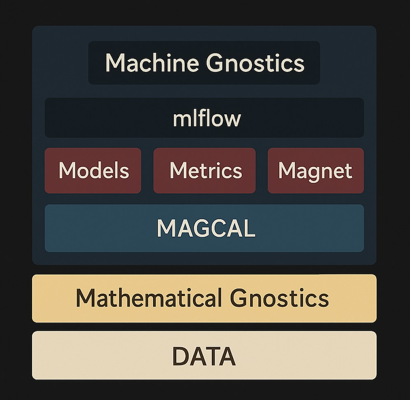

🧠 Machine Gnostics Architecture
This diagram presents the conceptual architecture of the Machine Gnostics paradigm. Unlike traditional machine learning rooted in statistical theory, this new approach is built on the foundation of Mathematical Gnostics (MG)—a finite, deterministic, and physically inspired framework.

📊 1. DATA (Base Layer)
The foundation of Machine Gnostics is DATA, interpreted differently from statistical frameworks:
- Each data point is a real event with individual importance and uncertainty.
- No reliance on large sample assumptions or population-level abstractions.
- Adheres to the principle: “Let the data speak for themselves.”
🧮 2. Mathematical Gnostics
This is the theoretical base of the system. It replaces the assumptions of probability with deterministic modeling:
- Uses Riemannian geometry, Einsteinian relativity, vector bi-algebra, and thermodynamics.
- Models uncertainty at the level of individual events, not populations.
- Establishes a finite theory for finite data, with robust treatment of variability.
🔷 3. MAGCAL (Mathematical Gnostics Calculations)
MAGCAL is the computational engine that enables gnostic inference:
- Performs deterministic, non-statistical calculations.
- Enables robust modeling using gnostic algebra and error geometry.
- Resilient to outliers, corrupted data, and distributional shifts.
🔴 4. Models | Metrics | Magnet
This layer maps to familiar components of ML pipelines but with MG-specific logic:
- Models: Trained using MAGCAL with finite-event inference.
- Metrics: Evaluate using gnostic loss functions and event-level error propagation.
- Magnet: A novel neural architecture based on Mathematical Gnostics, avoiding probabilistic backpropagation and inspired by algebraic learning.
🔵 5. mlflow Integration
Despite its theoretical novelty, Machine Gnostics fits smoothly into modern ML workflows:
- mlflow provides tracking, model registry, and reproducibility.
- Ensures that experiments and deployments align with standard ML practices.
🟦 6. Machine Gnostics (Integration Layer)
This layer unifies all components into a working system:
- Integrates MAGCAL, Magnet, and MG-based components.
- Functions as a complete ML framework based on a deterministic, finite, and algebraic paradigm.
- Enables seamless data-to-model pipelines rooted in the principles of Mathematical Gnostics.
🔁 Summary
| Traditional ML (Statistics) | Machine Gnostics |
|---|---|
| Based on probability theory | Based on deterministic finite theory |
| Relies on large datasets | Works directly with small datasets |
| Uses averages and distributions | Uses individual error and event modeling |
| Rooted in Euclidean geometry | Rooted in Riemannian geometry & physics |
| Vulnerable to outliers | Robust to real-world irregularities |
📚 Further Reading
- Pavel Kovanic, Mathematical Gnostics (2023)
- P. Kovanic & M.B. Humber, The Economics of Information (2015)
Machine Gnostics is not just an alternative—it is a new foundation for AI, capable of rational, robust, and interpretable data modeling.